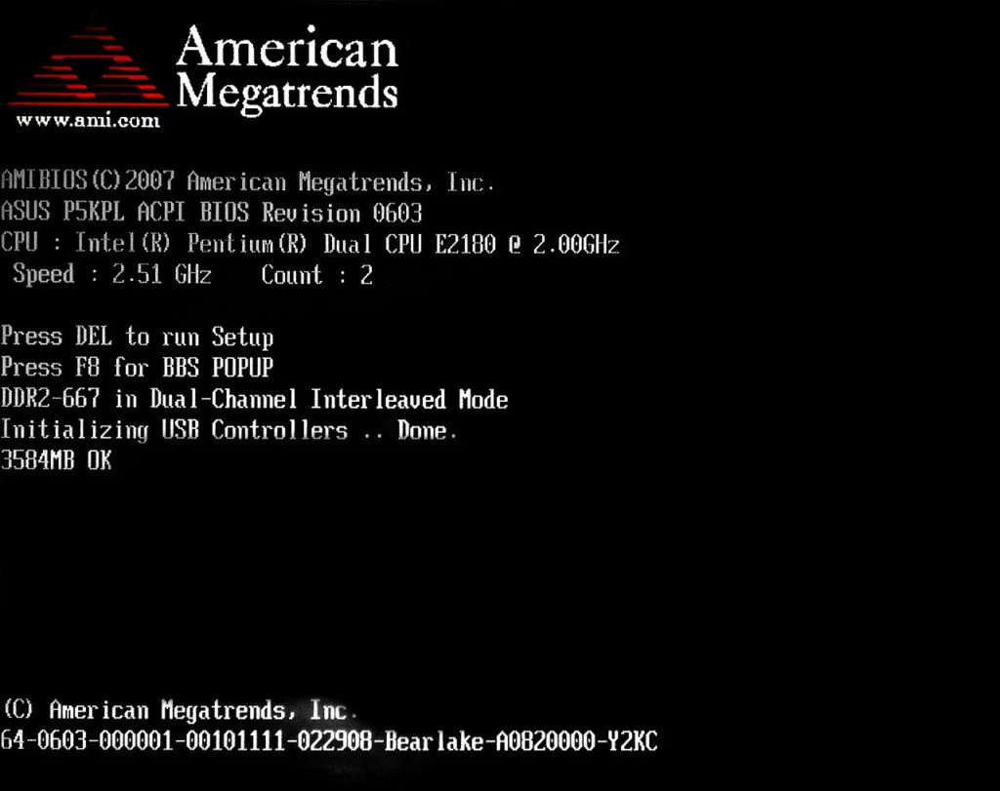
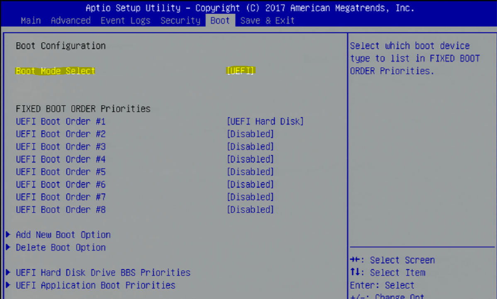
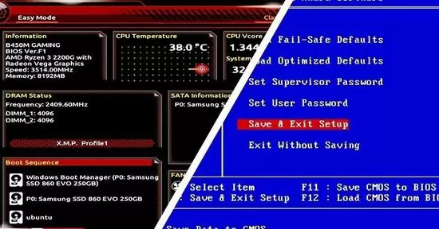
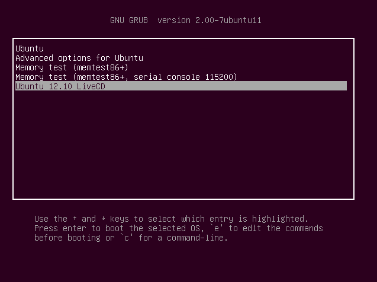
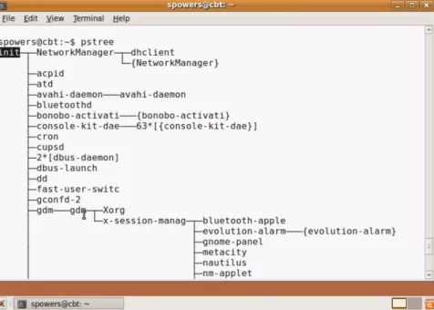
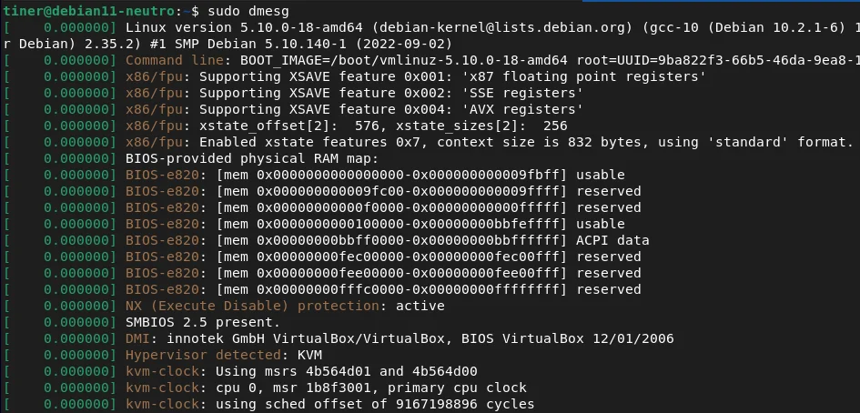
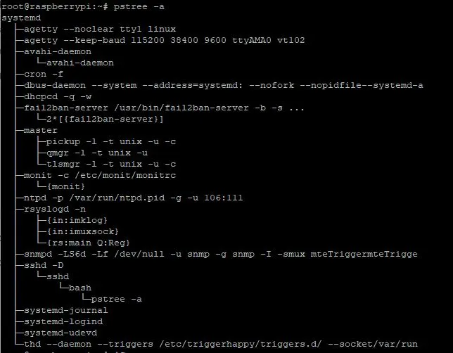

De Cero al Sistema Operativo
-
Fase 1: Autodiagnóstico de Encendido (POST)
Al aplicar tensión, la CPU se inicializa y su contador de programa (PC) se fija en una dirección de memoria predefinida. Esta dirección apunta a la ROM del firmware (BIOS o UEFI). La primera rutina ejecutada es el POST (Power-On Self-Test), un diagnóstico crítico in-place que verifica la integridad del hardware esencial:
- Verificación de la CPU (registros, flags).
- Chequeo de la memoria RAM (detección y prueba básica de integridad).
- Inicialización del controlador de vídeo básico para mostrar salida.
- Detección de buses principales (PCI, PCIe).
Un fallo fatal aquí resulta en una detención del sistema, comunicada a menudo mediante códigos de pitido (códigos POST).
-
Fase 2: Inicialización de Firmware y Selección de Dispositivo
Superado el POST, el firmware inicializa los controladores de bajo nivel y enumera los dispositivos. A continuación, consulta su configuración almacenada en memoria no volátil (NVRAM, antiguamente CMOS) para determinar la secuencia de arranque (Boot Priority). Esta secuencia ordenada (ej. 1. SSD NVMe, 2. USB, 3. Red PXE) le indica al firmware dónde debe buscar el código de arranque ejecutable.
-
Fase 3: Carga del Código de Arranque (La bifurcación MBR vs. UEFI)
Este es el punto de divergencia fundamental entre el arranque tradicional y el moderno:
- Modo Legacy (BIOS/MBR): La BIOS lee el primer sector lógico (Sector 0, de 512 bytes) del dispositivo seleccionado. Este es el Master Boot Record (MBR). La BIOS carga estos 512 bytes en la dirección de memoria física `0x7C00` y transfiere el control de la CPU (ejecuta un `JMP 0x7C00`). Este minúsculo código (Stage 1) debe localizar y cargar la siguiente etapa (Stage 2) del gestor de arranque.
- Modo Moderno (UEFI/GPT): La UEFI, que actúa como un micro-SO, posee controladores para sistemas de archivos (ej. FAT32). No lee un sector fijo, sino que busca una partición específica marcada con un GUID único: la EFI System Partition (ESP). Dentro de la ESP, navega por un directorio y ejecuta un archivo binario EFI (ej. `\EFI\BOOT\BOOTX64.EFI` o `\EFI\Microsoft\Boot\bootmgfw.efi`).
-
Fase 4: Ejecución del Gestor de Arranque (Stage 2)
El control ahora reside en el gestor de arranque principal (ej. GRUB2, systemd-boot, o Windows Boot Manager), que ya está cargado en RAM. Este software es significativamente más complejo:
- Interpreta su propio archivo de configuración (ej. `grub.cfg`).
- Tiene capacidad para leer múltiples sistemas de archivos (ext4, NTFS, Btrfs).
- Presenta un menú interactivo al usuario si hay múltiples sistemas operativos o kernels.
- Localiza la imagen del kernel y el disco RAM inicial (initrd) en el sistema de archivos.
-
Fase 5: Carga del Kernel y el Disco RAM Inicial (initrd)
Una vez el usuario selecciona una entrada (o por defecto), el gestor de arranque carga dos artefactos esenciales en la memoria RAM:
- El Kernel: La imagen del núcleo del sistema operativo (ej. `vmlinuz` en Linux). Es el corazón del SO, responsable de la gestión de memoria, procesos y hardware.
- El `initrd` (initial ramdisk): Un archivo (ej. `initramfs.img`) que contiene un sistema de archivos raíz temporal. Su propósito es crucial: contiene los módulos y controladores (ej. para NVMe, LVM, RAID o LUKS) que el kernel necesita para poder montar el sistema de archivos raíz real, que de otro modo sería inaccesible.
-
Fase 6: Inicialización del Kernel y Montaje del Raíz Real
El gestor de arranque cede el control de la CPU al kernel, pasándole la ubicación del `initrd`. El kernel se descomprime a sí mismo, se inicializa (configurando la gestión de memoria, interrupciones, etc.) y monta el `initrd` como su sistema raíz (`/`) temporal.
Desde este entorno temporal, el kernel carga los módulos del `initrd` (ej. `nvme.ko`), detecta el disco duro real, y ejecuta un script que monta el sistema de archivos raíz permanente (definido por el parámetro `root=UUID=...`). Finalmente, utiliza la llamada al sistema `pivot_root` (o `switch_root`) para descartar el `initrd` y adoptar el sistema de archivos permanente como su nuevo `/`.
-
Fase 7: Ejecución del Proceso `init` (Espacio de Usuario)
Con el sistema de archivos real montado, el kernel ha completado su arranque. Su última tarea es ejecutar el primer proceso del espacio de usuario: el proceso con PID 1.
En sistemas Linux modernos, este es `systemd` (o `init` en sistemas SysV). Este proceso (que ya no es el kernel) se convierte en el padre de todos los demás procesos del sistema. Lee su propia configuración (ej. los 'targets' y 'services' de systemd) e inicia, a menudo en paralelo, todos los demonios del sistema, servicios de red, montaje de sistemas de archivos secundarios y, finalmente, el entorno gráfico y el gestor de inicio de sesión (Login Manager), presentando la pantalla de bienvenida al usuario.